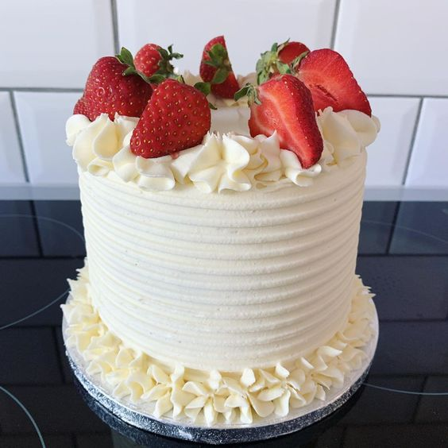

Pastel Tres Leches

Postre elaborado con un pan bañado en una salsa de leche. El pan contiene harina de trigo, azúcar, esencia de vainilla y huevo; una vez horneado y frío, se baña con una mezcla de tres leches: condensada, evaporada y entera (aunque esta última se sustituye en algunos casos por crema). El pastel se decora con merengue, crema chantilly o se cubre con chocolate; el resultado es un postre, frío, húmedo y muy dulce. Es uno de los pasteles más gustados y populares en México, por lo que puede encontrarse fácilmente en pastelerías, entero o en rebanadas, y por lo general se consume en reuniones y fiestas.